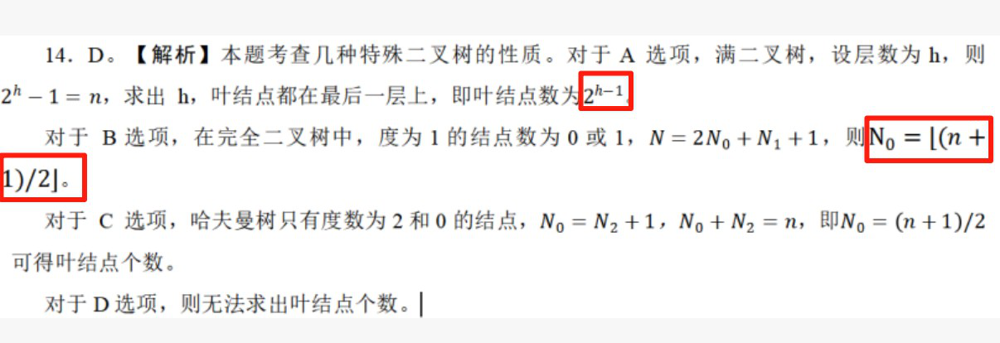
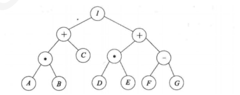

第 1 题
在一棵度为4 的树T 中，若有20 个度为4 的结点，10 个度为3 的结点，1 个度为2 的结点，10个度为1 的结点，则树T 的叶结点个数是（ ）。
A． 41 B． 82 C． 113 D． 122 答案与解析 答案：B
𝑛0 + 𝑛1 + 𝑛2 + 𝑛3 + 𝑛4= 4 ∗𝑛4 + 3 ∗𝑛3 + 2 ∗𝑛2 + 𝑛1 + 1 ，带入𝑛4= 20, 𝑛3= 10, 𝑛2 = 1, 𝑛1 = 10，得𝑛0 = 82。
教材第 19 页 第 2 题
在一棵度为4 的树中，结点总数为20 个，有2 个度为3 的结点，1 个度为2 的结点，7 个度为1的结点，那么叶子结点有（）个
A． 1 B． 2 C． 8 D． 9 答案与解析 答案：D
度的总和+1=结点总数，设𝑛𝑚 为度为m 的节点个数，由题：𝑛3 = 2, 𝑛2 = 1, 𝑛1 = 7所以4𝑛4 + 3𝑛3 + 2𝑛2 + 𝑛1 + 1 =𝑛4 + 𝑛3 + 𝑛2 + 𝑛1 + 𝑛0→3𝑛4 −𝑛0=−6 ①，结点总数为20，所以𝑛4 + 𝑛3 + 𝑛2 + 𝑛1 + 𝑛0= 20 →𝑛4 + 𝑛0= 10 ②，联立①②，解得𝑛0= 9。
教材第 19 页 第 3 题
对于一棵具有n 个节点、度为4 的树来说（ ）
A． 树的高度至多是n-3 B． 树的高度至多是n-4 C． 第i 层上至多有4*(i-1)个节点 D． 至少在某一层上正好有4 个节点 答案与解析 答案：A
这样的树中至少有一个节点的度为4，也就是说，至少有一层中有4 个或4 个以上的节点，因此，树的高度至多是n-3。本题答案为A。算最小高度应该用满4 叉树来推。
教材第 19 页 第 4 题
具有n 个结点的m 叉树用m 叉链表表示，则树中空指针域的个数为（ ）
A． 𝑚𝑛+ 1 B． 𝑚−1𝑛+ 1 C． 𝑛−1𝑚+ 1 D． 𝑚𝑛−1 答案与解析 答案：B
n 个结点m 叉树，一共有mn 个指针域，除了根节点没有父亲结点，其他n-1 个结点都有唯一一条链指向它（一个分支对应一个子结点），所以使用的指针域有n-1个，空的指针域有𝑚𝑛−𝑛−1=𝑚−1𝑛+ 1。
教材第 19 页 第 5 题
4 个结点二叉树的树型有（ ）种
A． 13 B． 14 C． 15 D． 16 答案与解析 答案：B
本题答案为n=4 的卡特兰数。证明：利用卡特兰数的递推式：𝐻𝑛= 𝐻0𝐻𝑛−1+ 𝐻1𝐻𝑛−2+ . . . + 𝐻𝑛−1𝐻0思想：确定根节点后，剩余n-1 个结点各自分配在左右子树，形成以上卡特兰数的递推数学模型。
教材第 19 页 第 6 题
8 个结点且高度为8 的二叉树的树型有（ ）种
A． 4 B． 8 C． 256 D． 128 答案与解析 答案：D
高度=结点数，说明每层只有一个结点，高度为8的二叉树，第8层最多容纳28−1 = 128 个结点，即第8 层每个结点到根节点的路径都是符合本题的二叉树的树型。答案选D。
教材第 19 页 第 7 题
下面关于二叉树的结论正确的是（ ）
A． 非空二叉树中，度为0 的结点个数等于度为2 的结点个数加1 B． 二叉树中结点个数必大于0 C． 完全二叉树中，任何一个结点的度，或者为0，或者为2 D． 二叉树的度是2 答案与解析 答案：A
二叉树中结点个数可以为0，称为空树，所以B 错。满二叉树中，任何一个结点的度，或者为0，或者为2。完全二叉树中，任何一个结点的度，或者为0，或者为1，或者为2，所以C 错。二叉树的度可以是0，1，2，所以D 错
教材第 19 页 第 8 题
每个结点的度都是0 或2 的二叉树称正则二叉树，n 个结点的正则二叉树中有（ ）个叶结点。 𝑛−1
A． log2𝑛 B． C． ⌈log2 𝑛+ 1⌉ D． 𝑛+ 1/22 答案与解析 答案：D
设度为0 和2 的结点数分别为。在二叉树中，存在结论：分支数+ 1 =结点数。在正则二叉树中不存在度为1的结点。则存在：2 × 𝑛2 + 1 =𝑛2 + 𝑛0 ，可得出：𝑛2 = 𝑛0 −1，𝑛2 + 𝑛0 = 𝑛，则。
教材第 19 页 第 9 题
设有n(n≥1)个结点的二叉树采用三叉链表表示，其中每个结点包含三个指针，分别指向其左孩子、右孩子及双亲（若不存在，则置为空），则下列说法中正确的是（）。 I．树中空指针的数量为n+2II．所有度为2 的结点均被三个指针指向III．每个叶结点均被一个指针所指向
A． I B． I、II C． I、III D． II、III 答案与解析 答案：A
二叉链表表示的二叉树中空指针的数量为n+1，三叉链表表示的二叉树多了一个根结点指向双亲的空指针，所以树中空指针的数量为n+2, Ⅰ正确。若根结点的度为2，则只有左、右两个孩子指向它，Ⅱ错误。若整棵树只有一个根结点，则没有指针指向它，Ⅲ错误。
教材第 19 页 第 10 题
设高度为h 的二叉树只有度为0 和度为2 的结点，则此类二叉树中所包含的结点数至少为（ ）
A． h+1 B． 2h-1 C． 2h D． 2h+1 答案与解析 答案：B
采用排除法，由二叉树的性质知，若二叉树只有度为0 和度为2 的结点，则总结点是一个奇数，可以排除A 和C。当h = 2 时，一个二叉树最多有结点数2^2-1 = 3 个，而D 项等于5，可以排除D。
教材第 20 页 第 11 题
下列说法错误的是（ ）
A． 不存在这样的二叉树：它有n 个度为0 的节点，n-1 个度为1 的节点，n-2 个度为2 的节点 B． 在任何一棵完全二叉树中，终端节点或者和分支节点一样多，或者只比分支节点多一个 C． 若一个叶子节点是某二叉树先序遍历序列中的最后一个节点，则它必是该树后序遍历序列中的最后一个节点 D． 只要知道完全二叉树中节点的先序序列，就可以唯一地确定它的逻辑结构 答案与解析 答案：C
A：不满足n0 =n2 +1 的性质，所以不存在这样的二叉树。 B：在完全二叉树中，n1 =0或1，而n0=n2+1，所以分支节点个数n1 +n2 =n0 或n1 +n2 =n0-1。 C：通过只有两个节点（其中a为根节点，b为a的右孩子）的二叉树来验证本叙述是不正确的。 D：在完全二叉树中，已知节点总数就可以确定其形状。已知其先序序列，便可知其节点总数，再根据先序序列确定每个节点的位置。实际上，只要已知完全二叉树的任一种遍历序列都可以唯一确定该二叉树。
教材第 20 页 第 12 题
在一个用数组表示的完全二叉树中，根结点的下标为1，那么下标为17 和19 的结点的最近公共祖先的下标是（）。
A． 1 B． 2 C． 4 D． 8 答案与解析 答案：C
当根结点下标为1 时，下标为i 的结点的父结点下标为\ left\ lfloor i/2\ right\ rfloor，那么下标为17 的祖先的下标有8, 4, 2, 1，下标为19的祖先的下标有9, 4, 2, 1，因此两者最近的公共祖先的下标是4。
教材第 20 页 第 13 题
一个具有513 个节点的二叉树，有（ ）种可能的层高
A． 513 B． 512 C． 504 D． 503 答案与解析 答案：C
511 = 29 −1 < 513 < 210 −1 = 1023，所以层高最小应该是完全二叉树的形态，高度为10，最高的树形是一条单链，层高为结点数513，所以10-513 都可以取到，答案为513- 10+1=504 种。思考：m 叉树呢？度为m 的树呢？层高可能是多少种。
教材第 20 页 第 14 题
已按勘误修正
给定结点个数n，在下面二叉树中，叶结点个数不能确定的是（ ）
A． 满二叉树 B． 完全二叉树 C． 哈夫曼树 D． 二叉排序树 答案与解析 答案：D
本题考查几种特殊二叉树的性质。对于A选项，满二叉树，设层数为h，则2
ℎ −1 =𝑛，求出h，叶结点都在最后一层上，即叶结点数为2
ℎ−1 。对于B选项，在完全二叉树中，度为1的结点数为0或1，𝑁= 2𝑁
0 + 𝑁
1 + 1，则N
0 = ⌊(𝑛+ 1)/2⌋。对于C选项，哈夫曼树只有度数为2 和0 的结点，𝑁
0 = 𝑁
2 + 1，𝑁
0 + 𝑁
2 = 𝑛，即𝑁
0 =𝑛+ 1/2可得叶结点个数。对于D 选项，则无法求出叶结点个数。
勘误修正： 解析配图（公式）已按勘误补入。

勘误：解析配图（公式）已按勘误补入。
教材第 20 页 第 15 题
在一棵二叉树中有30 个叶子结点，仅有一个孩子的结点有20 个，则该二叉树共有结点（ ）
A． 79 B． 76 C． 56 D． 81 答案与解析 答案：A
度为0 的比度为2 的结点多一个，度为0的结点30 个，所以度为2 的结点29个，度为1 的结点20 个，所以一共有30+29+20=79 个。
教材第 20 页 第 16 题
已知一棵完全二叉树的第6 层（设根为第1 层）有8 个叶结点，则完全二叉树的结点个数最多为（）
A． 39 B． 52 C． 111 D． 119 答案与解析 答案：C
完全二叉树这种题目，因为叶子结点只可能在最后一层和倒数第二层，所以既可以问最多的情况，也可以问最少的情况。最多的情况：8 个叶子是倒数第二层上的叶子数量。这时候倒数第二层是第6 层，一共有26−1 = 32 个结点，分支结点有32-8=24 个结点，最多的情况就是这26 个分支结点都有2 个孩子，也就是前6层是满二叉树，最后一层有24*2=48 个叶子结点的情况，最多有26 −1 + 48 = 111 个结点。最少的情况：8 个叶子是最后一层上的叶子数量，由完全二叉树的性质，前5 层节点总数由满二叉树公式25 −1 = 31，加上第6 层，最少31+8=39 个结点。
教材第 20 页 第 17 题
一棵有15 个节点的完全二叉树和一棵同样有15 个节点的普通二叉树，叶子节点的个数最多会差（）个
A． 3 B． 5 C． 7 D． 9 答案与解析 答案：C
完全二叉树一共有8 个叶结点，而普通二叉树最少可以有1 个叶结点(单链)，相差最大8-1=7。
教材第 20 页 第 18 题
设有n（n>1）个结点的二叉树采用三叉链表表示，其中每个结点包含三个指针，分别指向左孩子、右孩子及双亲（若不存在，则置为空），则下列说法正确的有（） I．树中空指针数量为n+2II．通过三叉链表，可以在O（1）时间复杂度找到二叉树中任意结点前中后序遍历的直接前驱。 III．每个叶子结点只有一个指针指向它IV．任意度为2 的分支结点的三个指针非空
A． II、III、IV B． I、III、IV C． I、III D． I、II、IV 答案与解析 答案：C
I 正确，对于正常二叉树，空指针域数量是n+1 个，再讨论本题三叉链表引入的父亲指针，只有根结点没有父亲结点，所以多出来一个空指针域，因此总的空指针域是n+2 个。 II 错误，比如一棵高度为h 的二叉树，根节点左子树高度为h-1，那么根结点的右孩子的前驱结点是根节点左子树里的先序序列最后一个结点，这个结点一定在最底层，所以最坏结果，时间开销是O （h）。 III 正确，叶子结点没有孩子结点，所以指向他的结点只有他的父亲节点，但要注意根节点是叶子结点的例外，这里题目说了n>1，所以不存在根节点是叶子结点的情况，因此该选项正确。 IV 错误，度为2 的分支结点可能是根节点，根节点的双亲指针为空。
教材第 20 页 第 19 题
如果一棵二叉树的先序序列是...a...b..，中序序列是...b...a...，则（ ）
A． 节点a 和节点b 分别在某节点的左子树和右子树中 B． 节点b 在节点a 的右子树中 C． 节点b 在节点a 的左子树中 D． 节点a 和节点b 分别在某节点的两棵非空子树中 答案与解析 答案：C
先序序列是…a…b...，则b在a的左子树中或者b在a的某个祖先x的右子树中，中序序列是…b…a…，则b 不可在a 的某个祖先x 的右子树中，即b 只能在a 的左子树中。
教材第 20 页 第 20 题
在下列关于二叉树遍历的说法中，正确的是（ ）。
A． 若有一个结点是二叉树中某个子树的中序遍历结果序列的最后一个结点，则它一定是该子树的前序遍历结果序列的最后一个结点 B． 若有一个结点是二叉树中某个子树的前序遍历结果序列的最后一个结点，则它一定是该子树的中序遍历结果序列的最后一个结点 C． 若有一个叶结点是二叉树中某个子树的中序遍历结果序列的最后一个结点，则它一定是该子树的前序遍历结果序列的最后一个结点 D． 若有一个叶结点是二叉树中某个子树的前序遍历结果序列的最后一个结点，则它一定是该子树的中序遍历结果序列的最后一个结点 答案与解析 答案：C
二叉树中序遍历的最后一个结点一定是从根开始沿右子女指针链走到底的结点，设用p 指示。若结点p 不是叶结点(其左子树非空)，则前序遍历的最后一个结点在它的左子树中，A、B错误：若结点p 是叶结点，则前序与中序遍历的最后一个结点就是它，C 正确。若中序遍历的最后一个结点p 不是叶结点，它还有一个左子女q，结点q 是叶结点，那么结点q 是前序遍历的最后一个结点，但不是中序遍历的最后一个结点，D 错误。
教材第 21 页 第 21 题
设n,m 为一棵二叉树上的两个结点，在后序遍历时，n 在m 前的充分条件是（ ）
A． n 在m 右方 B． n 是m 祖先 C． n 在m 左方 D． n 是m 子孙 答案与解析 答案：D
后序遍历的顺序是LRN，若n 在N 的左子树，m 在N 的右子树，则在后序遍历的过程中n 在m 之前访问；若n 是m 的子孙，设m 在N 的位置，则n 无论是在m 的左子树还是在右子树，在后序遍历的过程中n 都在m 之前访问。其他都不可以。选项C 要成立，就需加上两个结点位于同一层这个条件。
教材第 21 页 第 22 题
先序序列为1,2,3,4 的不同二叉数有（ ）个
A． 13 B． 14 C． 15 D． 16 答案与解析 答案：B
首先观察先序和中序的非递归代码，可以发现，先序序列是在入栈的时候输出元素，中序序列是在出栈的时候输出元素，其他代码都一致。即得出：先序等价于入栈序列，中序等价于出栈序列。入栈序列可以通过卡特兰数推出栈序列个数。先序+中序可以确定一棵唯一的二叉树，先序确定，中序序列的不同个数是卡特兰数，所以二叉树的树型即卡特兰数种。n=4的卡特兰数是4𝐶2∗44+1 = 14 。 𝐶𝑎𝑡𝑎𝑙𝑎𝑛4=
教材第 21 页 第 23 题
4 个不同权值大小不同的元素组成的二叉排序树，有（ ）种不同的树型
A． 13 B． 14 C． 15 D． 16 答案与解析 答案：B
原题同上题，由于二叉排序树（BST）中序是升序序列，n 个不同的元素组成的二叉排序树，中序序列唯一。确定中序序列（出栈序列），可以推不同的先序序列个数（入栈序列）是卡特兰数种，再由先序+中序确定一棵唯一的二叉树可以得到，不同的二叉树树型是n=4 的卡特兰数14，答案为B。
教材第 21 页 第 24 题
设有一表示算术表达式的二叉树（见下图），它所表示的算术表达式是（ ）。

A． A * B + C / (D * E) + (F - G) B． (A * B + C) / (D * E) + (F - G) C． (A * B+C) / (D * E+(F - G)) D． A * B+C / D * E + F - G 答案与解析 答案：C
通过中序遍历即可得到正确的算术表达式，注意，每读出一个操作符，都需要在对应位置加上括号：(((A * B)+C)) / ((D * E)+(F - G)))。再根据无意义的括号合理删减，找出选项中与之匹配的正确答案。答案选C。
教材第 21 页 第 25 题
在二叉树中有两个结点m 和n，若m 是n 的祖先，则使用（）可以找到从m 到n 的路径。
A． 先序遍历 B． 中序遍历 C． 后序遍历 D． 层次遍历 答案与解析 答案：C
在后序遍历退回时访问根结点，就可以从下向上把从n 到m 的路径上的结点输出，若采用非递归的算法，则当后序遍历访问到n 时，栈中把从根到n 的父指针的路径上的结点都记忆下来，也可以找到从m 到n 的路径。
教材第 21 页 第 26 题
下列关于树的说法错误的是（ ）。
A． Ⅰ、Ⅲ、Ⅳ B． Ⅱ、Ⅳ C． Ⅰ、Ⅱ D． Ⅰ、Ⅲ 答案与解析 答案：D
Ⅰ错误，树的层序遍历一般使用队列。Ⅱ正确，图的深度优先遍历必须使用栈。Ⅲ错误，图的广度优先遍历一般使用队列。Ⅳ正确，见上一题解析。
教材第 21 页 第 27 题
一棵二叉树的前序遍历序列为ABCDEFG，它的中序遍历序列可能是（ ）
A． CABDEFG B． ABCDEFG C． DACEFBG D． DBCEAFG 答案与解析 答案：B
只要按照前序序列的顺序入栈，无论怎么出栈肯定是符合中序序列的，所以这个问题就变成了，如果给定一个栈，入栈顺序是ABCDEFG，那么下面哪种出栈顺序是可能的。只有B选项可以满足。
教材第 21 页 第 28 题
由6 个节点组成的二叉树，若中序遍历序列为ABCDEF，则不可能的后序遍历序列是（ ）
A． CBEADF B． ADFECB C． ABDECF D． BADCFE 答案与解析 答案：A
中序遍历和后序遍历能唯一确定一棵树，能画出一棵树即符合，只有A 不符合，其他三个选项树的结构如下：
教材第 21 页 第 29 题
某二叉树的前序序列为ABCDEFG，中序序列为DCBAEFG 则该二叉树的深度（根结点在第1层）为（）
A． 2 B． 3 C． 4 D． 5 答案与解析 答案：C
二叉树的前序序列为ABCDEFG，A为根节点。中序序列为DCBAEFG，可知DCB 为左子树节点，EFG 为右子树节点。同理B 为C 父节点，C 为D 父节点。同理E 为F 根节点，F为G 根节点。故二叉树深度为4 层。C 选项正确。
教材第 22 页 第 30 题
对于层序序列（ABDCEFGIH）和中序序列（BCAEDGHFI）所确定的二叉树，下列选项正确的是（）
A． 后序序列是CBEGHIFDA B． 先序序列是ABCDEFGIH C． 后序序列是CBEIHGFDA D． 先序序列是ABCDEFGHI 答案与解析 答案：D
由中序序列和层序序列可以唯一确定一棵二叉树，对于层序序列，可以确定子树的根节点，在中序序列中的左右位置可以确定这个节点是左子树还是右子树的根结点，由此直到遍历完整个序列。二叉树如下图所示，可知正确答案是D。
教材第 22 页